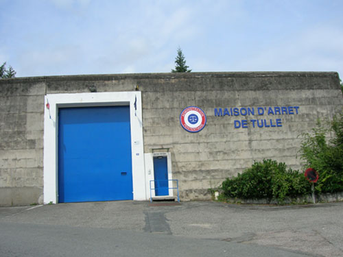
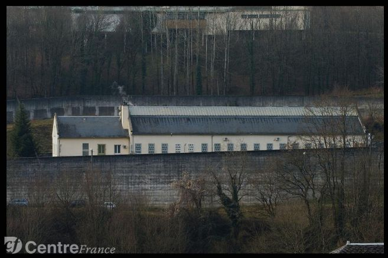
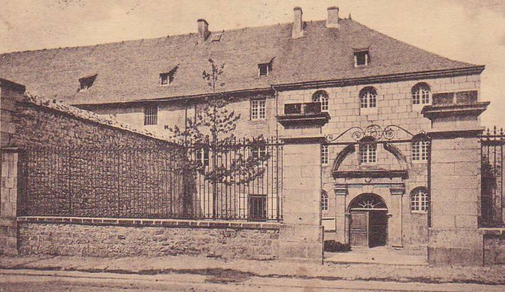
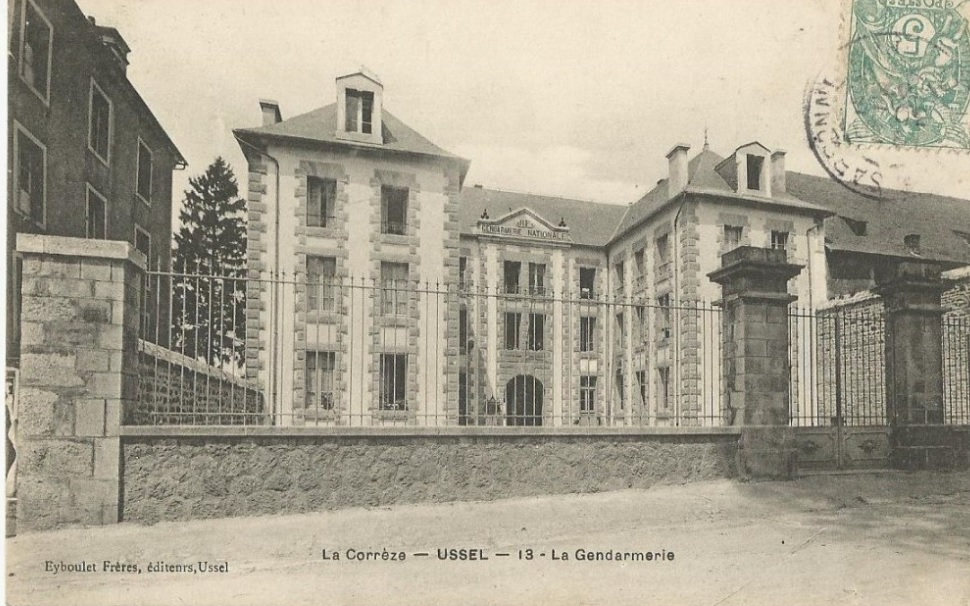
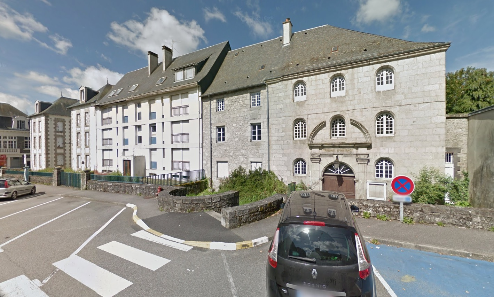

| Département | Images | Ville | Nom | Adresse | Période | Capacité | Histoire du lieu | Nombre d'exécutions |
| Corrèze (19) | Brive-la-Gaillarde | Prison des Ursulines | Place Jean-Marie Dauzier | 1792-1907 | L’ancien couvent de Sainte-Ursule, fondé vers 1610, recouvrait un vaste périmètre allant de l’église Saint-Sernin à la place du Civoire. Désaffecté comme toutes les abbayes pendant la Révolution, il est revendu au cours de l’an III à des particuliers. La partie ouest du couvent, cédée à la ville, accueille dès la Révolution, la prison, puis la gendarmerie en janvier 1796, les deux entités accessibles via une entrée commune – le porche de la photo – qui conduisait à la place de la Halle désormais démolie. Sur l’image, la prison est à gauche. La maison d’arrêt, agrandie entre 1813 et 1815 par l’architecte Plon, restera en service jusqu’à la construction d’une nouvelle prison cellulaire en périphérie du centre-ville, non loin du nouveau palais de justice. Bien que dès 1909, l’idée de construire une nouvelle halle signifiait à court terme la mort des édifices restants, il fallut attendre le 18 janvier 1936 pour que la démolition ait lieu. A sa place, du moins en partie, on bâtit l’immeuble de la Caisse d’Allocations Familiales. | Aucune exécution. | ||
| Corrèze (19) | Brive-la-Gaillarde | Maison d'arrêt | 1 bis, boulevard Amiral Grivel | 1907-1990 | 14 places, 8 surveillants (1962) | Prison cellulaire de forme rectangulaire et de taille réduite, vite cernée d'immeubles et d'entreprises. Siège d’une association socio-culturelle pour la réinsertion des détenus de 1983 à octobre 1990. Après sa fermeture en mars 1990, sert de bâtiment pour le Centre d'Hébergement et de Réinsertion Sociale jusqu'en janvier 2016, date à laquelle le CHRS déménage rue Descartes. | Aucune exécution | |
| Corrèze (19) | Tulle | Maison d'arrêt, de justice et de correction de la Barussie | Rue des prisons (rue de la Bride) | 1840-1961 | Sous l’Ancien Régime prisons de la sénéchaussée de Tulle sont installées dans une partie restantes de l’ancien château du Puy-Saint-Clair : la tour de la Barussie, étroite et carrée - environ 30 pieds de large pour 60 de haut -. Dès 1774, celle-ci fait l’objet d’un rapport désastreux : « Pour monter au premier étage il y a un escalier en bois très droit et dangereux, l’appentis qui sert de guichet et adossé au mur menace d’une ruine prochaine, le plancher étant absolument délabré ; la chambre à côté et qui est celle du concierge est la seule ou sont actuellement les prisonniers, est en très mauvais état ; la chambre au-dessus est totalement délabrée ; il y a seulement dans les deux angles de la tour deux cachots pratiqués en bois et dont on ne peut se servir que pour enfermer la nuit deux personnes dans chacun, attendu qu’ils sont très étroits et qu’on ne peut les y laisser le jour puisqu’on ne reçoit dans ces cachots aucune lumière et très peu d’air par une petite ouverture d’environ trois pouces. » Le tribunal voisin était à l’avenant. Pourtant, les changements ne se feront que progressivement, à partir de la Révolution. Le 3 février 1790, la tour, trop encombrée, gagne une annexe curieuse : une partie du Collège, au grand dam des parents qui souhaitent un autre voisinage pour leurs enfants. Cette cohabitation, dénoncée bien des fois, prendra fin en 1806. Pressées par le temps et le fait que les bâtiments seront bientôt récupérés pour en faire un pensionnat, les autorités songent à installer prison et gendarmerie dans l’ancien couvent des Récollets, mais l’idée est abandonnée. La prison demeure dans la tour de la Barussie (pour l’heure, j’ignore où s’en fut la gendarmerie). Le tribunal, lui, siège depuis quelques années dans l’ancienne maison Darche, et prendra ses nouveaux quartiers dans un palais de justice neuf, sur les bords de la Corrèze, à compter 1827. En juillet 1821, deux dangereux malfrats, Gaiphard et Robin, s’évadèrent de la tour depuis le toit, via la rue du Fossé… soit une descente à l’aide d’une corde de fortune de 24 mètres ! Gaiphard, hélas pour lui, lâcha la corde à hauteur du deuxième étage, pensant frôler le sol, ne parvenant qu’à se blesser gravement. Les deux hommes, rattrapés, passèrent en jugement le mois suivant pour attaque de diligence, ce qui leur valut une double condamnation à mort, suivie d’exécution… Finalement, en 1840, la vieille tour de la Barussie est rasée et de nouvelles prisons sont construites à sa place, conservant le nom de leur ancêtre – devenu également nom du faubourg s’étendant à son pied : parmi ses premiers occupants, se trouve Marie Capelle, veuve Lafarge, protagoniste malheureuse de l’affaire du Glandier. Prison assez paisible, victime d’un grave incendie le 14 février 1896 qui oblige à transférer les détenus dans l’hospice tout proche, elle sera hélas l’un des théâtres d’exactions de l’armée allemande durant l’Occupation. Durant la Quatrième République, l’école Turgot voisine envisageant de s’agrandir, on songe nettement à déménager la prison. Après la construction et l’ouverture d’une nouvelle maison d’arrêt, les anciens bâtiments carcéraux sont détruits peu après 1960, offrant à l’école un terrain propice pour l’édification de son centre technique. | Aucune exécution | ||
| Corrèze (19) |   |
Tulle | Maison d'arrêt, de justice et de correction | 26, rue Souham prolongée | En service depuis 1961 | 54 places (1962) | Construite en quatre ans, du 9 mai 1956 (obtention du permis de construire) à 1960, à l’emplacement d’anciens abattoirs, la maison d’arrêt de Tulle a commencé sa vie en fanfare, car ses premiers détenus, intégrant les 34 cellules de la nouvelle prison le 04 août 1961, n’étaient autres que les officiers du putsch d’Alger ! Bâtiment en longueur avec annexe latérale, haut de deux niveaux, d’une forme quasi-similaire à la seconde prison de Brive, elle est voisine de la bibliothèque et des archives départementales sur les hauteurs de la ville. Six ans durant, on fit de cette prison modeste mais très sécurisée un établissement à Q.H.S, avant de lui retirer cette fonction en 1981. De nos jours, elle connaît toujours la surpopulation, sa capacité normale tournant aux alentours de 50 prisonniers, mais en accueillant 90 à 100 simultanément. | Aucune exécution |
| Corrèze (19) |    |
Ussel | Maison d'arrêt des Ursulines | Boulevard Clémenceau | 1792-1926 | C’est en 1792 que le couvent des Ursulines de la ville, déserté par les religieuses après environ cent quarante ans d’existence, héberge à la fois (du nord au sud) le tribunal, la maison d’arrêt et la gendarmerie. La petite prison, après sa fermeture définitive, servira de laiterie, avant de finir sous les coups des démolisseurs vers 1963 pour la construction d’un immeuble neuf. L’une de ses portes et sa grille sont exposées depuis au musée d’Ussel. Curieusement, elle fut la seule victime de cette destruction, les bâtiments de la gendarmerie et du tribunal demeurant intacts de nos jours – même si ayant perdu leurs cours d’honneur avec l’ouverture du boulevard Clémenceau qui les borde. | Aucune exécution |
{kind=link}
{kind=link}
{kind=link}
{kind=link}
{kind=link}